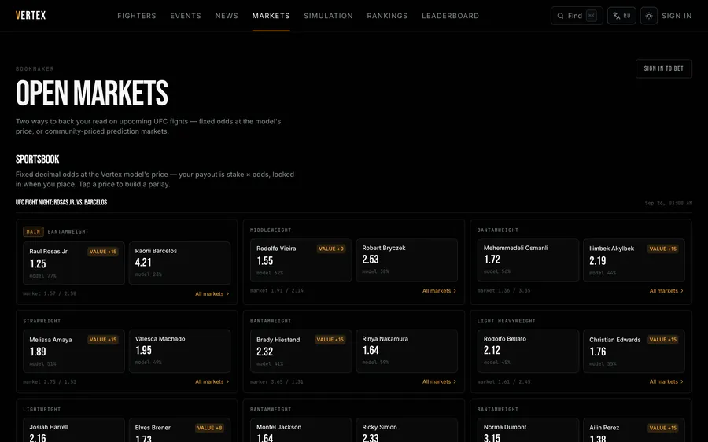
Moscow applying for Fall 2027 entry
Seventeen, final year at Letovo School. I build forecasting models for UFC and boxing and test them against the bookmaker's closing line. I'm also a co-founder and Head of AI at Gluline, a messenger.
Scroll
Each ball is one of the 84 hypotheses in my first paper, placed by how far a bet on it would have grown, at fair odds and after the bookmaker's cut. Keep scrolling and they turn into a chart.
The same 84, as a chart
A bet that grows twentyfold is the usual bar for one hypothesis. Six clear it at fair odds, and one still does after the bookmaker's cut, on its luckiest seed. Testing 84 at once raises the bar to 1,680, and the best of them stops at 151.
Built and shipped
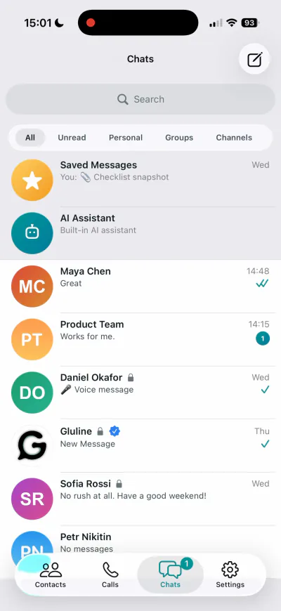
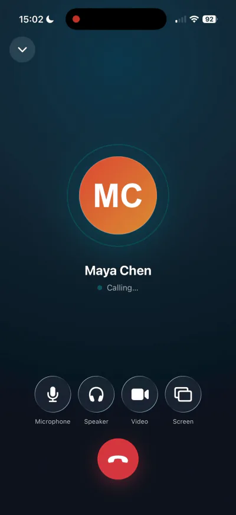
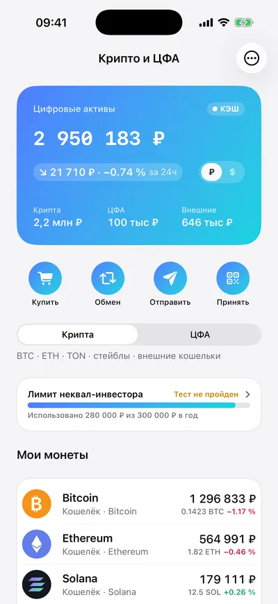
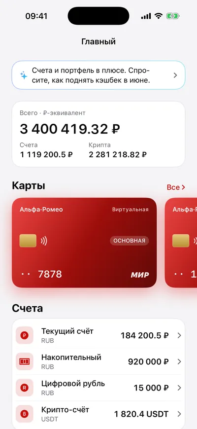
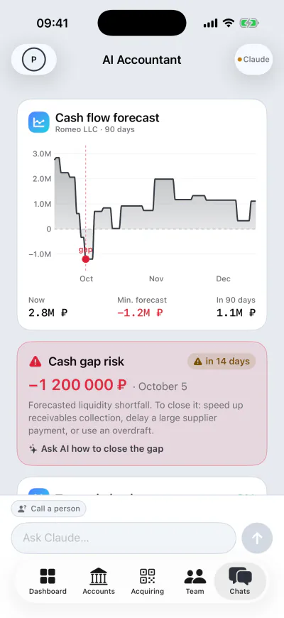
01 Live product
Vertex MMA
A nine-model UFC forecasting stack, graded against the bookmaker's closing line.
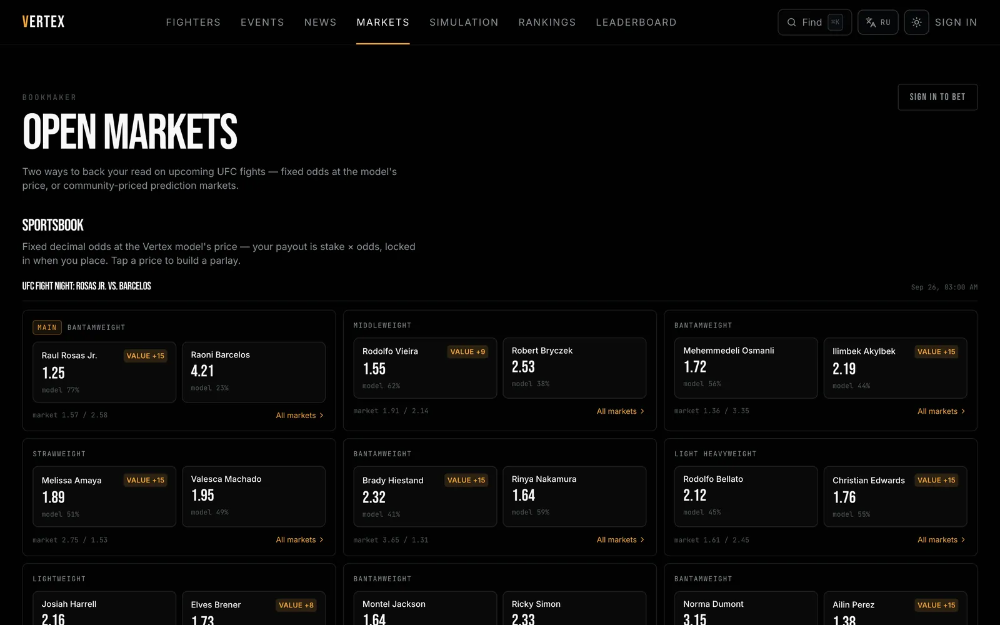
- AUC, held out from 2025
- 0.7244
- fighters
- 4,581
- bouts
- 8,906
- events
- 795
The system
The main model picks the winner from 118 features, blending LightGBM, CatBoost and logistic regression. Others handle debuts and how and when a fight ends, and a simulator plays each bout out ten thousand times. The site runs in English and Russian, with virtual currency only, on Next.js and Postgres, with the models in Python.
Measured against the market
Held out from January 2025. On the 582 bouts with a price, the closing line is ahead on all three scores. The model is better calibrated than the line and less sharp; the rest of the gap is resolution, which needs information the public record does not contain.
| Accuracy | Log-loss | Brier | AUC | |
|---|---|---|---|---|
| Model, all 664 bouts | 0.6747 | 0.6137 | 0.2124 | 0.7244 |
| Model, 582 priced bouts | 0.6753 | 0.6171 | 0.2140 | |
| Closing line, same 582 | 0.6838 | 0.5922 | 0.2035 |
Each metric has its own truncated axis, printed under it, and every row is oriented so that a longer bar is the better score.
The papers it led to
Both of my papers grew out of evaluating this model. The first re-tests the 84 places where it looked like it beat the market, as bets at the bookmaker's own prices. The second measures the smallest improvement its model-selection pipeline can detect, and finds that retraining under another random seed reproduces 80% of the only improvement it ever shipped. Both are under review at NeurIPS 2026 workshops.
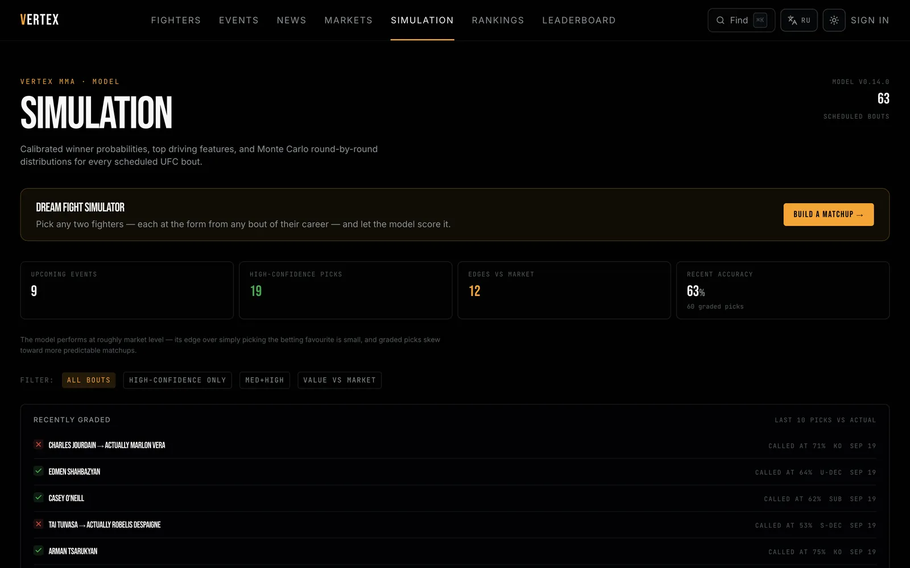
02 Released
Gluline
Co-founder, engineer and Head of AI
A messenger for people who want to know exactly who can read what. On the App Store, Google Play and the web, in ten languages.
From the build sent to App Store review. Every name and number on these screens is demo data.
- from the first files to the App Store
- 4½ months
- released on
- iOS, Android, web
- languages in the app
- 10
- unit tests at the release gate
- 309
Four and a half months
The oldest files are from the start of April 2026. On 19 August Gluline went live on the App Store, then on Google Play, with a web client at gluline.com. It is one repository: Android in Jetpack Compose, iOS in SwiftUI, the web client, a Python and FastAPI backend, the infrastructure and the protocol documents.
The interface follows Apple's Liquid Glass, and the Android and web clients were rebuilt to match it instead of looking like ports.
An assistant you switch on yourself
As Head of AI I own everything the product does with a model. The assistant is off until you turn it on, and while it is off your chats are never passed to it. Every chat carries a card that says whether the assistant can read it, and it can be switched off for one conversation without switching it off everywhere.
Switched on, it answers questions about the chat you are in, keeps a memory of you that you can read and clear, and any answer it gives can be reported. Voice messages can be transcribed where they sit.
Encryption
Chat content is encrypted on the device with a key for each chat, and the server keeps that key only wrapped to each member's public key: while the assistant is off in a chat, the company holds nothing that opens it. One-to-one calls are encrypted between the two devices. Group calls pass through a media server that decrypts them to forward them, so the store listing says they are not end-to-end encrypted, and it claims no forward secrecy.
How it shipped
Nothing reached a store without clearing a written release checklist: a clean build, 309 unit tests passing, and a check that minification had not broken any of the 15 fields the app sends over the wire.
Two formal audits are on record. April's raised about 58 findings. August's, before release, raised 74 candidates and put each through an adversarial second pass: 42 confirmed, and 32 refuted and written down as refuted, so the next audit does not spend time on them again.
03 Concluded research
Vertex Boxing
The Vertex MMA models moved to professional boxing, to test whether regional and undercard lines are soft enough to beat. They are not. What the model turned out to read is where the line is going.
- blended into the market price
- +0.0043
- closing-line value at the top, over the bottom, on unseen data
- ×2.0
- held-out bouts it is scored on
- 89,087
- real bets placed
- 0
The thesis, and what happened to it
The project began from a claim: the UFC closing line is sharp, but regional and club boxing lines are soft, so that is where a model built on records would find room. The test set says the reverse. The model does best against the market on twelve-round title fights and worst on four-to-six-round club fights: betting a fixed 2% edge returns +13.1% on the first and −14.9% on the second.
The model reads records and ratings, and a rating is only as good as the record under it. At world level both fighters have thirty bouts behind them; on a club card the market knows which of the two is being managed, and the model is reading two thin records.
Checked on a window the rule never saw
Refit on data up to June 2021 and run unchanged on the two years after, the pattern held: the top of the market gave twice the closing-line value of the bottom. The money did not follow. The return was +9.5% with zero inside its interval, and −3.2% or +2.8% at closing prices, depending on how the margin is taken out.
The leak it caught
Judges' scorecards are published only for fights that went the distance, so the mere presence of judge fields told the model how a fight had ended, a fact nobody has before the bell. Where judges were recorded, 9.7% of fights ended early; where they were not, 74.3% did. A control on 5,673 events confirmed it was the outcome and not the crawler. The leak is gone, and so is a smaller bug that made two identical runs disagree: re-run seven weeks later, the published results came back identical to sixteen significant digits.
A random search, with the rules written first
The last thing tried was brute force, under a protocol committed before the first fit. 200 random configurations were trained on bouts up to June 2021 and ranked on 2021–2023, and the top five were scored once on 2023–2026, which the search never saw. All five did worse there than the model already in use, two of them clearly so even at 99%. The best had led by +0.0017 where it was chosen and trailed by 0.0004 where it was not, so its whole lead came from being picked on the window it was scored on. The model already in use was the best of the 200. Section 8 of the report has the table.
The opening line, and tests fixed in public first
Everything above measures the model against the closing price. Scored instead against how the fights ended, the picture splits in two. Bets at Bet365's closing price made nothing, and the one result that looked like money there turned out to come from stale prices. Bets at the opening price, about three days before the fight, with the model blended into that price, returned +10.9% over 2023–2025. On its own the model forecasts worse than the opening line. Blended in, it moves that line most of the way to where it closes.
Those fights had been looked at before, so the test was run again on 2016–2020, where the model had never been scored against an opening price. The rules were hashed into the Bitcoin blockchain and pushed to GitHub before the model was even trained. It passed: +18% to +24% at ProBoxingOdds' opening prices, an e-value of seven million against a bar of 20. On 2021–2023 at Bet365 it fell short. A third test decided in advance which fights to bet. Leaving out the club fights looked like the obvious improvement, and it lost on every past window, so the rule stayed as it was. It was then run once on the first seven months of 2026, which nobody had bet on, and passed again: 41.8 against the same bar. Section 9 of the report has both tests and every check that could have killed them.
Where it stands
Concluded in September 2026, all of it backtest. On its own the model does not beat the closing line. Blended into the market price it improves it by +0.0043, so it carries information the price does not. At the closing price that is worth nothing in money. At the opening price it was worth money in three windows out of four, two of them fixed in public before they ran. Whether it still is can only be shown live: bookmakers limit accounts that win at the open, and no real bet has been placed.
04 Client work
Zacks to Interactive Brokers
A commissioned execution pipeline that turns a published rank into Interactive Brokers orders, on a schedule, dry run by default.
- stocks in one day's screen
- 4,369
- positions it targets
- 25
- largest single order, of the book
- 10%
- sells that stop a run, of the book
- 80%
What it does
The only project here that somebody else specified and paid for. It ingests screen exports from Zacks, turns them into an equal-weight book of 25 positions, and works out the orders that close the gap to what the Interactive Brokers account holds. Collection runs every trading day on a VPS. So far it runs in dry run; the connection to a live account is next, on a paper account first.
Why dry run is the default
A mistake here costs real money, so the pipeline does nothing to the account unless it is told to, and a malformed export or a surprising position stops the run rather than guessing its way through it. No single order may exceed 10% of the book, and a run that would sell more than 80% of what is held stops before it starts.
05 Open source
Clipwell
A small, native clipboard history for macOS and Windows. Free, MIT licensed, and one Homebrew command away.
- licence
- MIT
- network calls
- 0
- kinds of clip: text, link, image, file
- 4
- tests in the Windows core
- 54
Written twice
The same bar, the same cards, the same keys and the same history format, implemented natively on both platforms rather than once in Electron. No account and no subscription. Installing it is brew install --cask romanprigodskii/tap/clipwell, which meant shipping a cask, a release pipeline and a product site alongside the app itself.
Passwords stay out
Content that a password manager marks as concealed or transient is never written to disk, so copied passwords do not end up in the history.
06 Internship at Alfa-Bank
Alfa-Romeo
Built during an internship at Alfa-Bank, as a concept of what a bank becomes by 2035. One passport, every profile a life needs, roubles and crypto in one balance, and an AI that works as a copilot rather than a chat window.
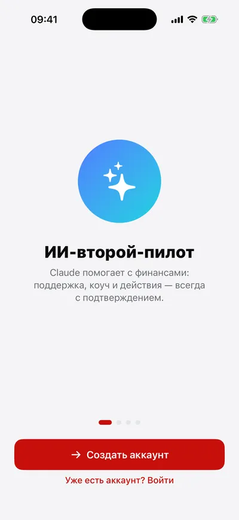
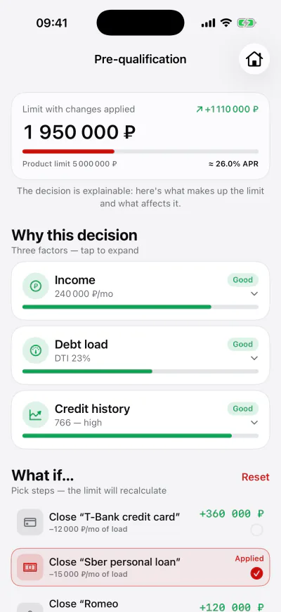
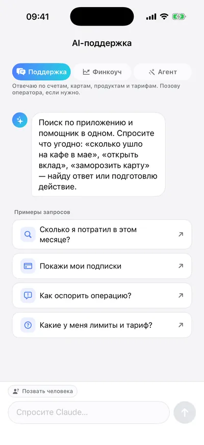
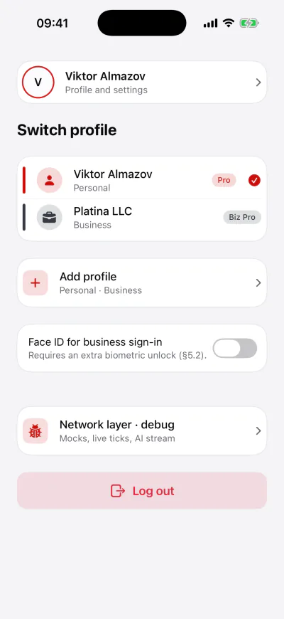
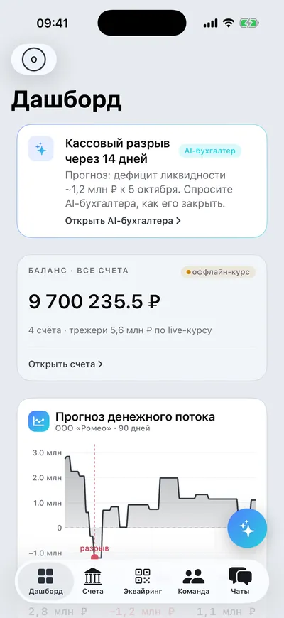
The demo as it runs. Every name, balance and date on these screens is demo data.
- screens in the app
- 93
- a business payment over this needs two signatures
- ₽500,000
- largest action the copilot may carry out
- ₽100,000
- AI accountant's cash-flow forecast
- 90 days
The bank of 2035
In 2035 your bank is also your mobile operator, your accountant and your crypto exchange. One passport opens as many profiles as a life needs: personal, business, a budget shared with a spouse, a child's card. Roubles, the digital rouble and crypto sit in one balance, because by then nobody should care which rail the money took. Even the cashback is flexible: it can arrive in gigabytes.
What actually runs
The rates are live, from the Bank of Russia's daily fixing and from CoinGecko. The copilot is Claude behind guardrails: it drafts the action and waits for a yes, and when there is no key or no network a deterministic stand-in takes over, so the demo never falls over halfway through a pitch. The wallet is a closed economy on Postgres: sign up with a phone number and send play roubles, or play crypto, to another phone.
A loan that explains itself
The credit screen does not stop at yes or no. It shows the three factors behind the limit, then lets you ask what if: close that credit card, and watch the limit recount.
The business half
Romeo Business lives in the same app: accounts with crypto treasuries, acquiring by payment link, QR, NFC and terminal, stablecoins converted to roubles on arrival, a team where any payment over ₽500,000 waits for a second signature, and an AI accountant that draws the next ninety days of cash flow and points at the gap two weeks before it opens.
Research
Two sole-authored papers, three submissions, all under review at NeurIPS 2026 workshops. Both came out of Vertex MMA: one audits its market-efficiency hypotheses with e-values, the other measures the smallest improvement its evaluation can detect.
-
Testing by betting when the bets are real
E-values test a hypothesis by betting against it. Here the other side of the bet is a real bookmaker: 84 pre-registered ideas about where Vertex MMA beats the market, each re-tested as a bet at the posted prices, over 1,787 fights.
E-Values: From Statistics to ML and NewInML
Decisions due 29 September
Read the paper -
Measure the instrument first
How small an improvement can a model evaluation actually see? Retraining the same model with a different random seed changes nothing real, yet it reproduces 80% of the only improvement Vertex MMA's winner model ever shipped.
TAE: Can We Trust AI Evaluation?
Decision due 22 September
Read the paper
The record
Checked against the published competition protocols where they exist. Links to each on request.
Economics
- 1st Moscow Olympiad in Economics, winner, first place by score in the Grade 10 division. It is one of the largest regional economics olympiads in Russia. Verified
- ×2 All-Russian Olympiad in Economics, national finalist in two separate years. The All-Russian Olympiad is Russia's national school olympiad system. Verified
Mathematics
- Gr 9 All-Russian Olympiad in Mathematics, regional stage prize-winner. Protocol
- Gr 8 Leonhard Euler Olympiad, regional prize-winner, third degree. The Euler Olympiad is the All-Russian mathematics olympiad for Grade 8, held on the same regional dates with problems from the same central commission. Protocol
- Gr 7 All-Siberian Open Olympiad, third-degree diploma. Protocol
- Gr 9 Letovo School, best MYP personal project in Mathematics, signed by the director, March 2025. Signed